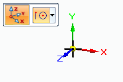

Create a coordinate system (synchronous)
-
In a part document, choose Home tab→Planes group→Coordinate System
 .
.The Coordinate System command bar is displayed, and a dynamic coordinate system is attached to the cursor.

-
On the command bar, from the Keypoints list, choose the type of point you want to locate to place the coordinate system.
You also can press F3 to lock to a face on the model.
-
In the graphics window, click to specify the origin for the new coordinate system.
Tip:-
You can place a coordinate system relative to model geometry, another coordinate system, or in empty space.
-
When you select an existing coordinate system, you can use the commands on the shortcut menu to show, hide, edit, rename, and delete the coordinate system.
-